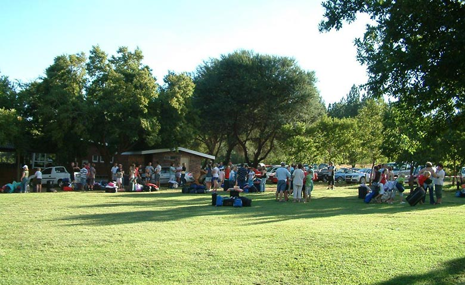

Understanding who we are in Christ
Discovering our true identity as children of God.
A central hub for NCJYC 2025 lineups, responsibilities, and resources—keeping everyone connected and prepared to serve.
Youth Camp Theme Song Our Duties & Responsibilities →Grounded in our identity and mission as children of God.
Discovering our true identity as children of God.
Letting go of labels that don’t come from God.
Walking with courage, faith, and purpose in Christ.